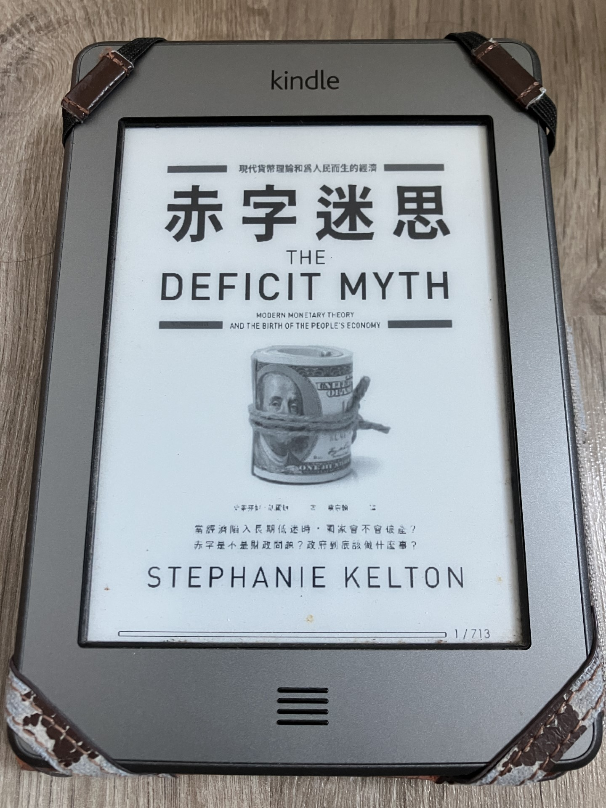

赤字迷思-現代貨幣理論和為人民而生的經濟(史蒂芬妮‧凱爾頓)

赤字迷思-這本書原先也不在我的閱讀清單內，因為我多半只會看有關ETF的書，一般經濟學說有關的書，我都是敬而遠之的。經濟對我來說是遙遠的，也是艱深難懂的;此外我之前也認為，政府不管有甚麼作為，經濟的好壞也跟政府的作為無關，似乎也沒有弄懂的必要。但是當我看到這一本書的書名的時候，我覺得相當震撼，所以就抱著姑且一試的心情看完了這本書。
不看還好，一看就馬上打破我舊有的觀念。書的一開始就提到，政府有花不完的錢，政府永遠都可以生的出錢，只要這個政府有自主獨立發行貨幣的能力(地方政府、希臘不算)。所以，基本上不會有債留子孫，也不會有政府要破產的風險，只要政府運用獨立發行貨幣的能力，就可以迎刃而解。而政府的債務，可以看做政府把錢灑到民間(非政府)機構的手中，人民就會資產累積;當政府是財政有盈餘的時候，反而代表民間的錢回流到政府，人民的資產就會減少。
當然，這也不是叫政府一直印錢來解決債務，雖然政府一直有能力可以解決政府自己的債務問題。那政府舉債或印錢的限制是甚麼?作者給出的答案很簡單，就是通貨膨脹。如果印出過多的鈔票造成通貨膨脹，那就不好，所以在舉債時優先考慮的是通貨膨脹。再來，政府要關心的就是舉債之後，是不是可以讓人民充分就業，把這個國家能夠使用的勞動資源都可以充分運用。另外，失業率和通貨膨脹是有關聯性的，失業率高一點，物價的上漲就會減緩，反之，物價就會急速飆升。然而，美國聯邦政府卻因為擔心物價會急速飆升，所以寧可不讓國家的人民充分就業，反而讓一般美國人民仍活在貧窮的痛苦當中。
而你也可能會問，那政府發行債券還有徵稅是為了甚麼?依照作者的說法，債券是政府想發行就發行，或是政府想要控制市場的利率而做出的手段。徵稅則是為了讓人民的財富可以重新分配，以及可以控制通貨膨脹的作用。所以，作者認為依照現在貨幣理論，政府不用考慮債務問題，政府更應該考慮的問題是通貨膨脹、人民充分就業、財富重新分配等問題。
前聯準會主席葛林斯潘說過，「沒有甚麼可以阻止聯邦政府創造它想要的錢，然後將其支付給某個人」。前總統甘迺迪在諮詢諾貝爾獎經濟學家詹姆士˙托賓時也提到，「赤字規模沒有關係，債務可大可小，只要不引起通貨膨脹，其他一切都只是空話」。所以，我們不需要為政府的赤字擔憂，我們更該擔心的是，政府是否能運用他的職權及手上的資源，使人民能充分就業，讓人民更幸福。
延伸閱讀:
Kindle app-使用iOS語音功能來"聽書"[Kindle]使用Calibre+DeDRM，幫你去除亞馬遜(Amazon)電子書的DRM
另外，美國購物代運可參考:
https://a1253247.blogspot.com/p/hopshopgo-vs-spexeshop.html
對板球有興趣的可參考:
https://a1253247.blogspot.com/2022/05/cricket-line-written-by-admin-24-10.html
對生活飲食有興趣，可參考: